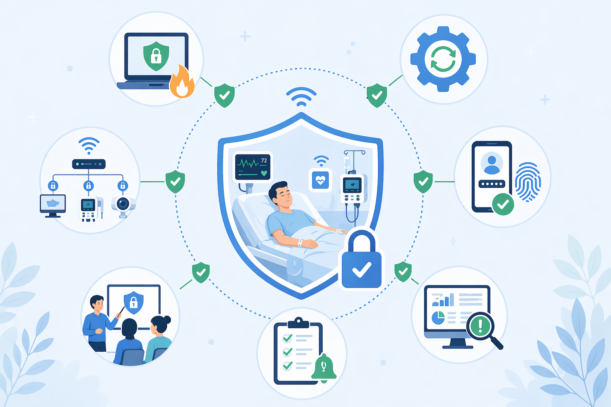

While IoT devices bring many benefits to the health sector, they also bring in a lot of security issues such as data breaches, hacking and malfunctions in the devices. These can lead to privacy breaches, potential harm to the clients and hesitancy in using such healthcare devices.
This is a crucial aspect as healthcare databases are sensitive and any misuse or failure can lead to loss of quality in patient care.
The main security concerns with IoT devices in healthcare include:
These issues can compromise patient safety and the integrity of healthcare data.

Healthcare organizations can reduce risk by:
These actions help protect patient information, improve device reliability, and create safer digital healthcare systems.